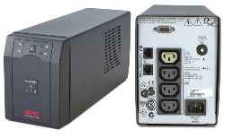

UPS
Un Sistema de Alimentación Ininterrumpida (UPS) es un dispositivo electrónico que proporciona energía de respaldo a equipos eléctricos durante cortes de energía o caídas de voltaje. Funciona como un seguro contra las interrupciones del suministro eléctrico, protegiendo los equipos conectados de daños y asegurando su funcionamiento continuo.
